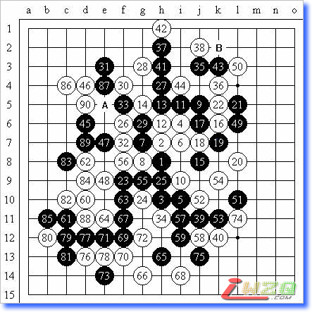
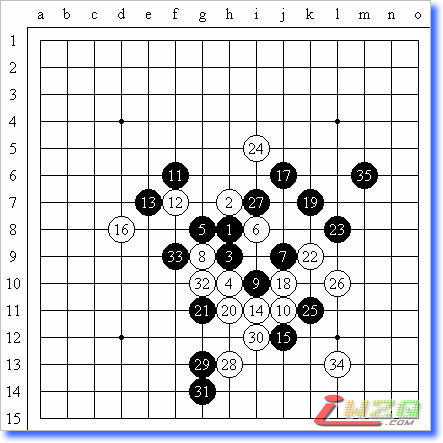
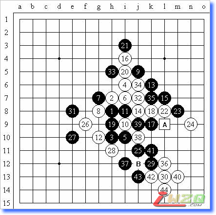
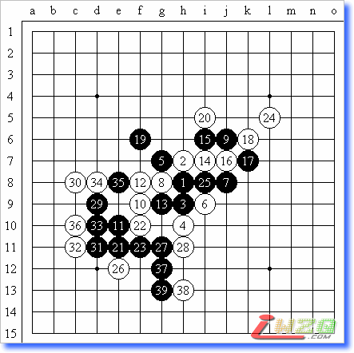
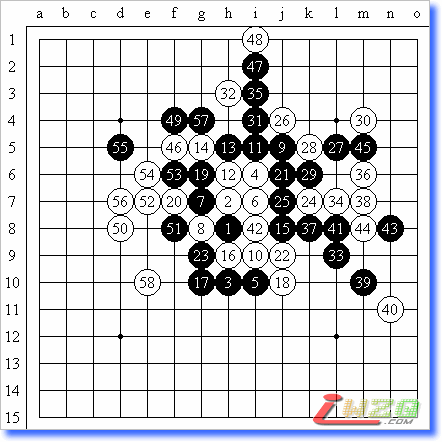
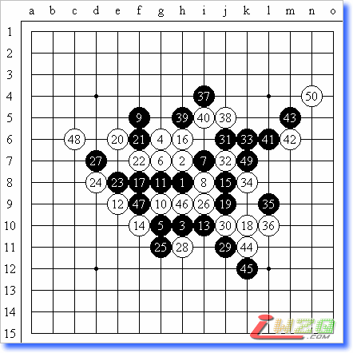
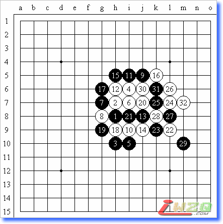
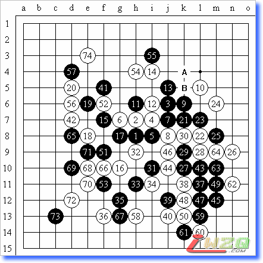
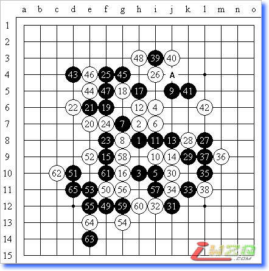
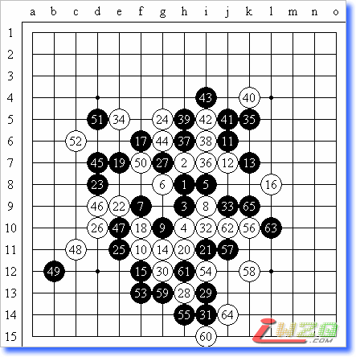

本文作者为爱沙尼亚少年棋手特耐特・泰姆拉八段，由上海顾炜八段翻译
这是我在A组的第一盘对局。我拿黑棋布局，我的对手是强大的瑞典棋手――斯坦芬.卡尔松。我相当肯定他面对瑞星局一定会交换棋子颜色，也一定会下上面的黑11变化。
对于此后的白棋我有很多主意（在此后的对局，我选择了其他变化）。
在这一局里，我决定选择实战的白16。我在2003年国际EMAIL锦标赛（b1207局）下过，我认为这是一个好点。如果黑17下在29位，白棋第18手只要简单地下在32位，白棋将变得非常强劲（这是和白16走17位一样的变化，但是实战的16则非常强硬）。
在我们的对局中，斯坦芬的黑25可能显得太被动了。在一些时候我获得了先手，但是到白34手我又失去了先手。我考虑过32走在A的变化，但是最终我改变了主意并选择了一个可能不是很好的计划。我在下出实战第34手时，有一次可以简单地将白34下在35的机会。但是现在对手能够下在那里。白36后我认为他会将黑37下在B点、黑39下在白50。要是那样，我仍然有机会将第40手下在37位防御，那时很要紧的位置。接着我们轮流下在了一些位置，从第48手开始，局面很清楚，黑棋没有任何取胜的可能。所以他试着将局面导向和局，但由于在时间上的问题，他的85手出现了错误。这是很精彩和星幸运的一局。

黑：斯坦芬 八段（交换） VS 白：特耐特 六段 黑5=10 白90黑投了
第2轮。我的对手可能不是非常著名，但肯定不是一名弱手――饭尾义弘。他在QT赛和以前对我的比赛中获胜，是一位不可战胜的棋手。去年（2002年―编者按）我在世界团体赛上有过一次和他对局的机会，所以他也是唯一一位和我对局没有超过1局的日本选手。他布局松月。我交换。我们在最主要的黑5变化中较量，白18采用了中村茂的防御。我认为黑棋可以取胜，因为之前我和安度、安茨对这个变化进行过分析（后来的发展变得清晰，黑棋没有那么容易取胜）。所以实战我觉得非常舒服。我下了黑33后他似乎睡着了。对于这一手，他可能思考了1个半小时，最后下了34。糟糕的是这手以后没有VCF。我立即看到，但是用了更多时间检查，最后我下了35手，他认输了。

黑：特耐特 六段（交换） VS 白：饭尾义弘 七段 黑5=27 黑35白投了
我下一轮是对实力高强的瑞典棋手――Joachim Gaulitz。这是我唯一输的一局。
当他从QT具有进入A组的资格时，我非常吃惊。当他战胜我时，我更加吃惊。我再次布局瑞星。他没有交换。我考虑到了他的白12，但白14是一个惊奇。这个变化我看见他在QT赛中执黑下过2次，因此我担心他是有准备的。
我花费了大量时间计算2个点的变化。赛后他说他的计划是包括了19走在A点。实战的黑19是非常好的，一直到黑25黑棋很强劲。就在这个时候我开始由于了，我花了很多时间考虑黑29。最后直到我冲四了，我还在思考。之所以这样，是因为如果白32下在B点的话，我不能肯定黑31是否下在37更好。比赛结束后，我们在那里发现了黑棋很强的发展线路。
实战我选择了黑31防御在上面。事实上这个也是很强的。我还剩下7分钟，我在第33手犯了错误。如果我用自己的活三来防御对方的活三，然后第35手再下33位的话，那么黑棋将在左边存在很强的势力。我不能肯定黑的是否会在局部输棋，但37后白简单获胜。白44后我认输了。

黑：特耐特 六段 VS 白：Joachim Gaulitz 五段 黑5=10 白44胜
第4轮我的对手是非常著名的日本青年棋手――冈部宽。他在日本为世界杯个人锦标赛专门设置的选拔赛中获得优胜，从而获得参加本次A组资格。他是新一代的选手。所以这是一场对我来说很重要的比赛。我必须证明我自己。他选择了松月开局。我再次提出交换。他选择了次强的黑5，并使用了中村茂研究的白14变化。我的15手一定令他感到惊奇。他考虑了很长时间，最后应了实战的一手。黑17和白18的交换似乎是比较自然的。我分析了此时的局面，并考虑应该从哪里着手开始攻击。当我下的时候，我认为21到25的发展对我而言是很重要的。但实际上我现在更加需要加强9和15一线的攻击。所以我下了实战的黑19，他迅速的回应白20。现在我不用直接下黑23，但可以直接下黑21（关键点），我认为这已经足够了。现在对手试图寻找到能够有效防御黑棋攻击的点，可惜黑棋的势力已经太强大了。最后，他在第39手认输了。

黑：特耐特 六段（交换） VS 白：冈部宽 七段 5A=8 黑39白投了
接下去的对局中，我同陶德.安得森遭遇了。我开了瑞星，他提出交换。在和斯坦芬对局中，他的黑13下在了15位，我希望他能在这局继续这样下。但是他没有，黑13按照实战的下法。黑15后我开始考虑如何来下好白棋。我想下一些令他吃惊程度超过白16下在29位，也就是我击败斯坦芬的变化。最后我决定下一个需要冒风险的点，也就是实战的白16。我知道在日本书籍中有一些关于这个变化的谱，而且对于这个点的对局我也看了一些，但是实际上这些变化的次序是13走15，14走16。所以我决定在现在的局面下进行一种新的尝试。
后来我才开始意识到A组不是一个考试性的比赛。他花费了大量时间计算接下来的三个防点。实战的黑17是一个正确的选择。我不能肯定黑19是否有问题，可能也可以下在22位。黑23后局面看上去简单了，存在一些已知的变化，但实际仍然是有区别的。比方说，在一次比赛中，卡尔松和我就下过这样的变化。在这些对局中唯一的区别是我和斯坦芬的对局中17和18没有这么交换过。但实战是最大的区别，实战的18手帮助我在A组比赛中得分了。我实战下的白24后黑棋在这个局部没有胜法。而对手的时间也不够了。当白32后黑没有胜法时，对手开始转入防御，但已经太迟了。局势对黑太糟糕了，而且对手时间也没有了。最后我取得了胜利。

黑：安得森 五段（交换） VS 白：特耐特 六段 5A=10 白58黑投了
作为世锦赛中令人喜爱的选手之一，秦锦得分比较高。在俄罗斯最高联赛上他发挥的也很稳定。所以我非常期待这场精彩的对局。在赛前，他和我对局下了很多次残月，我和安度分析过，但没有找到好的方法。实战他决定下瑞星。我没有提出交换。针对我的白12，他迅速应对黑13。直到29手，双方下的很快。29到31，他花费了一小会儿思考。我知道白的最安全的计划，那里没有什么东西会导致和棋。实战进程就是这样，最终我们握手言和了。

黑：秦晋 七段 VS 白：特耐特 六段（不交换）5A=10 白50和
马汀是在锦标赛中瑞典最年轻的棋手。一些人认为他的得分会很差，但不久他就获得了4分。在我们的对局中，他选择了瑞星开局，因为其他瑞典选手也是这么选择的。这次的黑13他没有直接下在黑15位。可能他是想叫我感到吃惊，但事实上我是正在等待这个黑13，因为白14、16令他吃惊。于是他花费了大量时间计算，最后下了实战的黑17。然后我知道黑棋输了。17走在30位是比较安全的。黑棋没有更好的点了。所以在本局。我依靠记忆知识获得了分数。白32后对手认输。

黑：马汀 四段 VS 白：特耐特 六段（不交换） 5A=10 白32黑投了
如果说之前比赛中我的对手是可以击败的话，那么我最后4轮的对手都是明星棋手。因此尽管我已经获得了不少分数，并处于第三的位置，但是没有人真的认为我可以在剩下的比赛中获得3.5分。
第8轮，我同世界上最优秀的棋手安度.麦瑞德对局。因为他既是我的老师也是我的队员，我对他很了解。疏星布局并不惊奇，但是他下的变化令我吃惊。同样的变化他输给了俄罗斯的索斯科夫。我担心这是他的计划，因此小心翼翼的下着每一步。
直到他和索斯科夫对局的第29手，安度没有下在A位，而是下了实战的地方。比赛以后他解释说，29如果下在A位并不好，因为会被白棋占据B点。32手以后他考虑了很长时间，但仍然下了同索斯科夫对局中一样的33手。事后他说当时他想下38位的，但是他不是非常肯定。在第10轮，安度尝试了黑33下在38位对付斯坦芬.卡尔松，但最终仍然是和局。在我们这局里，当我下出白40时，我感到黑棋已经失去活力，白棋不久将控制局面。但实际上安度仍然主导着对局进程。白44是冒险的防点，白50唯一。安度下出黑53后，我认为他是疯狂的，让白棋有了很多开放的线路。但白棋没有连续获胜的方法。所以我平稳的下着，白58可能失去了同右边的联系。最终我们议和了。这是筋疲力尽的一局。

黑：安度 九段 VS 白：特耐特 六段（不交换） 5A=6 白74和
8月7日，我不得不和索斯科夫、西涅夫在同一天对局。在过去2年，索斯科夫在没有经常比赛后能回到A组，对每个人来讲都是一个巨大的惊奇。实战的白12没有什么值得惊奇的，但白14令我吃惊。我花了很长时间来考虑和计算我的计划。最终，我决定采用平静的风格应对。直到白26，局面还是很平衡，我猜测黑27、29是很好的发展。
我需要实战的黑27保持黑棋的活力。白30是错误的（30走57比较好）。我下了黑31后，安度输给了西涅夫，这时的状况对爱沙尼亚是危险的。假如我输或和，索斯科夫将成为A组的领头羊。白34是唯一。这时我开始长考，索斯科夫可能还有1个半小时。黑39是一个好点，试图联系21和45一线，但他的白40仍然防御的很强。

黑：特耐特 六段 VS 白：索斯科夫 七段（不交换） 5A=10 黑65白投了
我飞快的下了黑41，他应对42也很迅速。但是42是一个错误，如果白42走在A点，那么黑棋就无法使21和45一线工作起来。实战，我的黑43到47下的很快，然后再开始考虑。经过15分钟的考虑，我决定下49位，很强的一个点。
我还剩下10分钟，对手开始长考。我认为他的白50会下在58位，然后我将应对黑51。但他的考虑最终还是下了实战的白50，我应以51，现在他的时间比我少了。最后黑棋势力之强大足够获得胜利。白62走65可能更好，但也是输。65后他的时间用光了，同时也确实没有可以下的了。我感到很高兴，因为这是第一次成为A组的领头羊。
西涅夫是一位强大的俄罗斯棋手。他在过去的世锦赛A组获得过一次季军和一次亚军，而且在之前的对局中他执白在松月中村茂的著名变化中战胜了安度，所以我期待着同样的变化在现在进行。
真的发生了。他选择了松月黑5一打，直到33和我与饭尾义弘的对局一模一样。白34（直到比赛前我还在试图找到破解的方法）是非常强的点。
我不想象安度那样的下，尽管他说那是一个很强的计划。所以我决定尝试其他的变化。在俄罗斯最高联赛中，同样的局面，黑35、37后，西涅夫执白输给倪康夫。我了解白棋可以变化，可能对于发展来说不好，但至少它意味着安全（和棋对我来说足够了）。西涅夫的白44下的很快，我意识到对黑棋有很大帮助。
现在我试图为我自己找到一个计划。我决定下实战的黑45。西涅夫下的非常好（可能白48不需要），黑棋没有什么机会。就在我认为要和棋的时候，白58的出现使得白棋出现了一个致命的问题，这样就给了我再拿1分的机会。我相信我的眼睛没有问题（上一轮，我和索斯科夫的比赛一共花费了5个小时）。现在我可以休息一下等待最后的比赛了。

黑：特耐特 六段（交换） VS 白：西涅夫 八段 5A=36 黑65白投了
最后一轮，我至少要取得和棋。我的对手是日本在位名人，山口釉水。比赛我开了松月（这也是唯一一局我没有开瑞星的）。吃惊的是对手没有交换，他也选择了黑5一打。我猜想他将试图下中村茂的变化来对付我，因为他在前一轮已经和索斯科夫下过。但是白12只是可能，因为没有人可以证明他肯定能获胜（他用它击败了瑞典选手）。事实上，我已经注意到了，并听到很多人在谈论。
所以对于